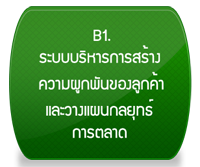
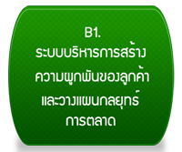
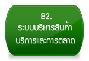
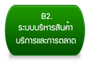
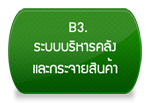
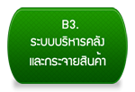

Corporate Policy Management
C1-WP-01-00-00
กระบวนการกำหนดและทบทวนระบบการนำองค์กร
C1-PC-01-01-00 กระบวนการชี้นำองค์กรและสร้างให้เป็นองค์กรที่ประสบความสำเร็จอย่างยั่งยืน (HPO)
C1-PC-01-02-00 กระบวนการกำกับดูแลองค์กร (CG)
C1-WP-02-00-00
กระบวนการวิเคราะห์บริบทเชิงกลยุทธ์
C1-PC-02-01-00 กระบวนการคัดเลือก & รวบรวมข้อมูล
C1-PC-02-02-00 กระบวนการวิเคราะห์สถานะองค์กร การเปลี่ยนแปลง และบริบทเชิงกลยุทธ์
C1-PC-02-03-00 กระบวนการทบทวนทิศทาง & วิสัยทัศน์ ระยะยาว
C1-WP-03-00-00
กระบวนการวางแผนและพัฒนากลยุทธ์
C1-PC-03-01-00 กระบวนการกำหนดกลยุทธ์หลักและความเสี่ยง
C1-PC-03-02-00 กระบวนการกำหนดวัตถุประสงค์เชิงกลยุทธ์และเป้าหมายระยะสั้น ระยะยาว
C1-PC-03-03-00 กระบวนการจัดทำแผนปฏิบัติการและคาดการณ์ผลการดำเนินงานระยะสั้นระยะยาวระดับองค์กร
C1-WP-04-00-00
กระบวนการจัดทำแผนถ่ายทอดและนำสู่การปฏิบัติ
C1-PC-04-01-00 กระบวนการ Cascade สู่ระดับ Business / Functional level ที่ส่งผลต่อเป้าหมายธุรกิจ & กลยุทธ์หลัก
C1-PC-04-02-00 กระบวนการจัดสรรทรัพยากรสนับสนุนอย่างเหมาะสม
C1-PC-04-03-00 กระบวนการสื่อสารถ่ายทอดเป้าหมายและกลยุทธ์ประจำปี สู่การปฏิบัติ
C1-WP-05-00-00
กระบวนการประเมินผลและปรับปรุง
C1-PC-05-01-00 กระบวนการติดตามความคืบหน้าการดำเนินงานขององค์กร และโครงการกลยุทธ์
C1-PC-05-02-00 กระบวนการ Best Practice sharing
C1-PC-05-03-00 กระบวนการปรับปรุงผลการดำเนินงาน/ระบบงาน & ปรับปรุงมาตรฐาน
C2-WP-01-00-00
กระบวนการระบุเรื่องเกี่ยวเนื่องกับบริบทและประเด็นสาระสำคัญของความยั่งยืน
C2-PC-01-01-00 กลุ่มผู้มีส่วนได้ส่วนเสียและองค์กระบวนการการระบุเรื่องเกี่ยวเนื่องกับบริบทความยั่งยืนของกร
C2-PC-01-02-00 กระบวนการจัดลำดับความสำคัญของประเด็นสาระสำคัญ (Materiality Analysis)
C2-PC-01-03-00 กระบวนการทวนสอบความสมบูรณ์ของประเด็นสาระสำคัญ (Validation)
C2-WP-02-00-00
กระบวนการกำหนดนโยบายกลยุทธ์ด้านความยั่งยืน
C2-PC-02-01-00 กระบวนการกำหนดนโยบาย เป้าหมายและตัววัด ด้านความยั่งยืน (Goal & Target )
C2-PC-02-02-00 กระบวนการกำหนดผู้รับผิดชอบ และกลยุทธ์ด้านความยั่งยืน
C2-PC-02-03-00 กระบวนการจัดทำแผนรวมความยั่งยืน (Sustainability Strategy Roadmap)
C2-WP-03-00-00
กระบวนการจัดทำ SD report
C2-PC-03-01-00 เตรียมกระบวนการรายงาน
C2-PC-03-02-00 หารือกับ Consult
C2-PC-03-03-00 กำหนดประเด็นสาระสำคัญและขอบเขตดำเนินงาน
C2-PC-03-04-00 ติดตามรวบรวมข้อมูลสำหรับการรายงาน
C2-PC-03-05-00 จัดทำรายงานและเผยแพร่
C3-WP-01-00-00
กระบวนการกำหนดและคัดเลือกตัววัดผลการดำเนินการ
C3-PC-01-01-00 กระบวนการกำหนด Initiative Goal, Process Outcome
C3-PC-01-02-00 กระบวนการสร้าง ออกแบบ Value-Driven Tree
C3-PC-01-03-00 กระบวนการกำหนดตัวเปรียบเทียบ (Benchmark)
C3-PC-01-04-00 กระบวนการตรวจสอบความสอดคล้องและ บูรณาการกับ Value-Driven KPI อื่นๆ
C3-WP-02-00-00
กระบวนการรวบรวม จัดเก็บ และบริหารตัวผลการดำเนินการ
C3-PC-02-01-00 กระบวนการกำหนดและหรือเลือก แหล่งที่มาของข้อมูล
C3-PC-02-02-00 กระบวนการสร้าง ออกแบบการดึง รวบรวม และจัดเก็บข้อมูล
C3-PC-02-03-00 กระบวนการทำข้อมูลให้ถูกต้อง (Cleansing)
C3-PC-02-04-00 กระบวนการบริหาร Data Repository เพื่อบูรณาการข้อมูล
C3-PC-02-05-00 กระบวนการกำหนด บริหาร และบังคับใช้การเข้าถึงความปลอดภัย และนโยบายการใช้ข้อมูล
C3-WP-03-00-00
กระบวนการบริหารวิธีการวิเคราะห์และการนำไปใช้ตัดสินใจ
C3-PC-03-01-00 กระบวนการกำหนดเป้าหมายและออกแบบแนวทางและขอบเขตการวิเคราะห์
C3-PC-03-02-00 กระบวนการออกแบบและสร้างรูปแบบการใช้งานและ Analytic Flow
C3-PC-03-03-00 กระบวนการอบรม แนะนำวิธีการใช้งานแก่ผู้ใช้
C3-PC-03-04-00 กระบวนการวิเคราะห์ข้อมูลภาพรวมระดับ Corporate
C3-WP-04-00-00
กระบวนการประเมินการใช้และปรับปรุงตัววัดผลการดำเนินการ
C3-PC-04-01-00 กระบวนการกำหนดวิธีการประเมินผลการใช้งานและคุณภาพของตัววัดผลดำเนินการ
C3-PC-04-02-00 กระบวนการการดำเนินการวัดผล
C3-PC-04-03-00 กระบวนการประเมินผลและกำหนดจุดปรับปรุง
C4-WP-01-00-00
กระบวนการบริหารนโยบายกระบวนการ
C4-PC-01-01-00 กระบวนการกำหนดนโยบายการบริหารกระบวนการ
C4-PC-01-02-00 กระบวนการบริหารและกำกับดูแลกระบวนการ
C4-WP-02-00-00
กระบวนการออกแบบและจัดทำมาตรฐานกระบวนการ
C4-PC-02-01-00 กระบวนการออกแบบและปรับปรุงกระบวนการ
C4-PC-02-02-00 กระบวนการบันทึกและควบคุมมาตรฐานกระบวนการ
C4-WP-03-00-00
กระบวนการบริหารงานเพิ่มผลผลิต (Productivity Improvement)
C4-PC-03-01-00 กระบวนการบริหารงานเพิ่มผลผลิต
C4-WP-04-00-00
กระบวนการบริหารการตรวจติดตามและปรับปรุงประสิทธิภาพ ประสิทธิผลกระบวนการ
C4-PC-04-01-00 กระบวนการบริหารการตรวจ ISA
C4-PC-04-02-00 กระบวนการสรรหาและพัฒนาผู้ตรวจ ISA
C4-PC-04-03-00 กระบวนการติดตามและวิเคราะห์ประสิทธิภาพ ประสิทธิผลกระบวนการ
C5-WP-01-00-00
กระบวนการบริหารนโยบายและกำกับดูแล BU
C5-PC-01-01-00 กระบวนการกำกับควบคุมนโยบาย BU
C5-PC-01-02-00 กระบวนการติดตามผลการดำเนินการกลยุทธ์ BU และ CP All
C5-WP-02-00-00
กระบวนการศึกษาความเป็นไปได้ในธุรกิจใหม่
C5-PC-02-01-00 กระบวนการศึกษาวิจัย ข้อมูลและแนวโน้มของธุรกิจใหม่
C5-PC-02-02-00 กระบวนการจัดทำทางเลือกธุรกิจใหม่
C5-WP-03-00-00
กระบวนการพัฒนากระบวนการธุรกิจใหม่
C5-PC-03-01-00 กระบวนการจัดทำแผนพัฒนาธุรกิจใหม่
C5-PC-03-02-00 กระบวนการทดลองธุรกิจใหม่
C5-PC-03-03-00 กระบวนการติดตามผลการดำเนินงานธุรกิจใหม่
C5-WP-04-00-00
กระบวนการรวบรวมข้อมูล และประเมินผล เพื่อการปรับปรุงด้านธุรกิจใหม่
C5-PC-04-01-00 กระบวนการรวบรวมข้อมูลด้านธุรกิจใหม่
C5-PC-04-02-00 กระบวนการวิเคราะห์และรายงาน ผลเพื่อการปรับปรุงธุรกิจใหม่
C5-WP-05-00-00
กระบวนการบริหารแต่ละหน่วยธุรกิจ (BU)
C5-PC-05-01-00 กระบวนการจัดทำกลยุทธ์สินค้า BU
C5-PC-05-02-00 กระบวนการสรรหา / พัฒนาผลิตภัณฑ์ BU
C5-PC-05-03-00 กระบวนการบริหารคลัง BU
C5-PC-05-04-00 กระบวนการเตรียมพื้นที่ BU
C5-PC-05-05-00 กระบวนการบริหารร้าน BU
C5-WP-06-00-00
กระบวนการรวบรวมข้อมูล และประเมินผลเพื่อการปรับปรุงด้านหน่วยธุรกิจ (BU)
C5-PC-06-01-00 กระบวนการรวบรวมข้อมูลด้านธุรกิจ BU
C5-PC-06-02-00 กระบวนการวิเคราะห์และรายงานผลเพื่อการปรับปรุงธุรกิจBU
Business Process Management
 
 
 
Corporate Resource Management